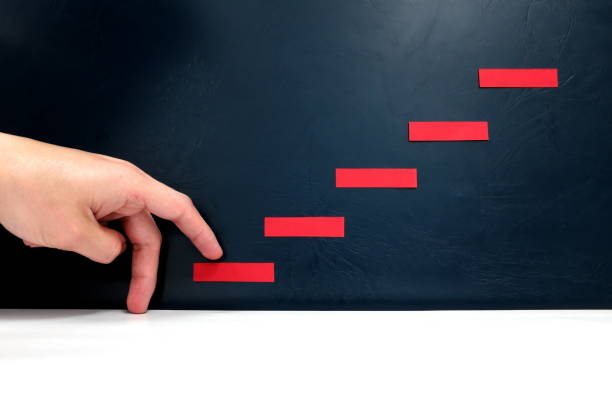

What I’ve Learned So Far as an IT Student
Lessons from classrooms, programming, projects, GitHub, mistakes, and the ongoing journey of learning Information Technology...
Thoughts on web development, tech, and community work — plus a small corner of poetry I still keep around.
Lessons from classrooms, programming, projects, GitHub, mistakes, and the ongoing journey of learning Information Technology...

BlogA personal reflection on curiosity, learning, programming, building things, and taking my first steps into the world of technology...
 Poetry
Poetry
हटाएर जालझेल आज उडे लक्ष्य चुम्छु भनी
मनमा आँट विश्वास बोकी
साहसी म बन्छु भनी...
 Poetry
Poetry
कम्पन दिँदै घुम्थयो महल, मध्यरात हुन्थ्यो जब
रुन्थ्यो कोहि
चिच्याउँदै त्यहाँ, ढल्थ्यो अनि रुख तब...
 Poetry
Poetry
छोडे सोच्नलाई मेरा एकछिन पखेटा जहाँ छ
देख्दा छुन्छु जस्तो
लाग्ने त्यो आकाश कहाँ छ ?...
 Poetry
Poetry
उडाई लग्यो गुँड लाँउन चरी, रित अन्सार
एउटै खुट्टो टेकन पाए
ढाक्थे म संसार...
 Poetry
Poetry
कला र संगीत, साहित्य, काव्य पूर्खाको मान हो
व्यासको भुमि
भानुको देन अमुल्य दान हो...